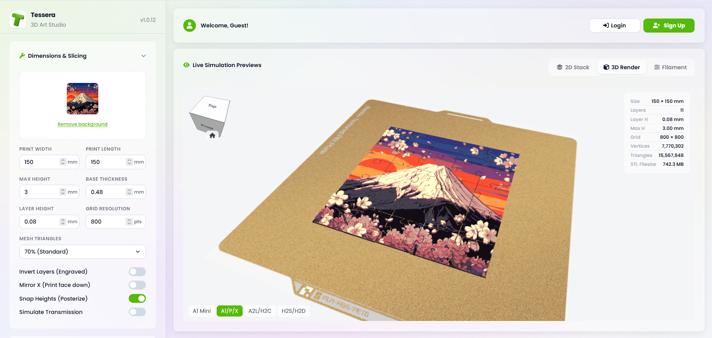

Shape your slice
Set the print dimensions, base thickness, layer height, grid resolution, and mesh quality to match your project.
Learn about slicingTessera transforms your images into posterised, printable 3D reliefs. Tune the colours, split into puzzle, and export when it feels right.

A focused toolkit for artists, makers, and anyone who wants to give their images a new dimension.
Set the print dimensions, base thickness, layer height, grid resolution, and mesh quality to match your project.
Learn about slicingBuild colour layers, match image palettes, and connect them to your filament library.
Colour layersSplit a relief into a custom jigsaw grid with clearance, pin offset, and organic edge controls.
Jigsaw splittingOrbit the 3D model, inspect individual layers, and make confident adjustments before exporting an OBJ or STL.
Preview & exportDrop in a PNG or JPEG and clean up its background when needed.
Dial in dimensions, layers, colours, and puzzle pieces.
Preview the result in 3D, then export it for your printer.